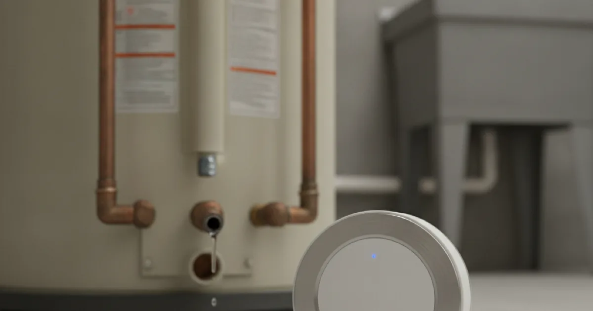
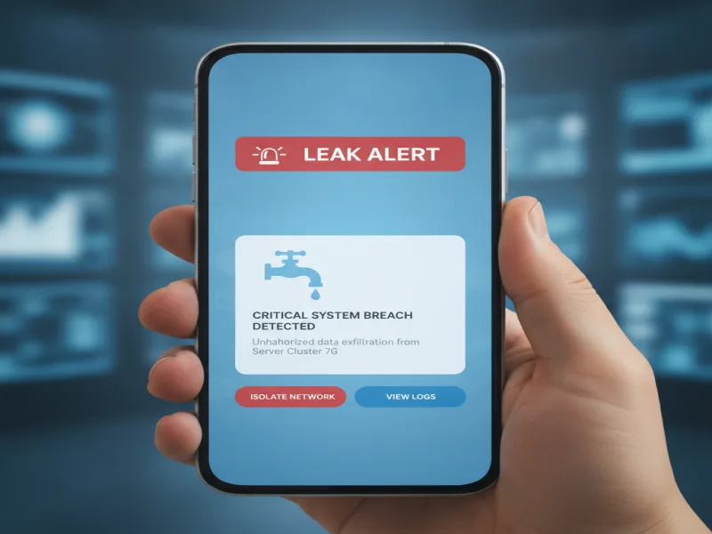

Water Leak Sensor Installation in Armonk, NY
A small leak behind a washer or under a sink can turn into serious damage before anyone notices. We install water leak sensors that alert you the moment water shows up where it shouldn't, so you can act before it spreads.
- Licensed & Insured
- Upfront Pricing
- 15+ Years of Experience
- Locally Owned & Operated

The installation process
We walk through your home and identify the spots most likely to leak without anyone noticing right away — under sinks, behind and beneath appliances, near the water heater, and around sump pumps. Those are the places we recommend placing sensors first.
We install and test each sensor, connect them to whatever alert system you're using, and make sure you know exactly what to do if one goes off. A sensor that alerts you but that you don't know how to respond to isn't much use.
What affects the cost
The number of sensors you want and the areas of your home you want covered are the biggest factors. A single sensor near a water heater is a small job; covering a whole basement, kitchen, and multiple bathrooms is more involved.
We'll walk your home with you, recommend the spots that matter most, and give you a clear price before installing anything.
Peace of mind for busy homeowners and second homes
We install a lot of leak sensors for homeowners who travel often or who split time between an Armonk-area property and a home elsewhere. A leak that goes unnoticed for a few days is bad enough; one that goes unnoticed for weeks while a house sits empty can cause serious damage. Sensors close that gap by alerting you the moment something's wrong, no matter where you are.
Devices that are properly listed for safety matter here, since these sensors sit near water and often near electrical outlets. Look for products that carry UL's product safety certification when choosing a system, and we're happy to help you pick a reliable option if you're not sure where to start.
Getting the most out of your sensors
Sensors are only useful if they're placed correctly and you actually get the alert. We test the connection to your phone or monitoring app during installation, not just the sensor itself, so you're not caught off guard by a notification that never arrives.
Leak sensors work well alongside other prevention steps, like finding the source of a hidden leak that's already started, or keeping pipes from freezing in winter when you're away during the cold months.

When to call a pro
Call us if you're setting up a new home for leak monitoring, adding sensors to a second home before your next trip, or dealing with a leak sensor system that isn't alerting the way it should. We can also help if you suspect repairing a pipe hidden beneath a slab is behind a leak your sensors have already picked up on.
Leak sensors are one piece of our leak prevention and plumbing services — take a look at our other plumbing services for everything else we handle.
Frequently asked questions
Where should leak sensors be placed in my home?
Common spots include under sinks, behind washing machines, near water heaters, and around sump pumps — anywhere a leak could go unnoticed for a while.
Do leak sensors shut off my water automatically?
Basic sensors alert you but don't shut off water on their own. We can talk you through options that pair a sensor with an automatic shutoff valve if that's something you want.
How do I get notified if a sensor detects water?
Most systems send an alert to your phone through an app. We test this connection during installation so you know it's actually working.
Are leak sensors useful for a home I don't live in full-time?
Yes, this is one of the most common reasons homeowners install them. A sensor can alert you to a problem long before you'd otherwise notice.
How many sensors does a typical home need?
It depends on the size of your home and how many risk areas you want covered. We'll recommend a setup after walking through your property.
Can you add sensors to a home that already has some installed?
Yes, we can expand an existing system or replace sensors that aren't working reliably.